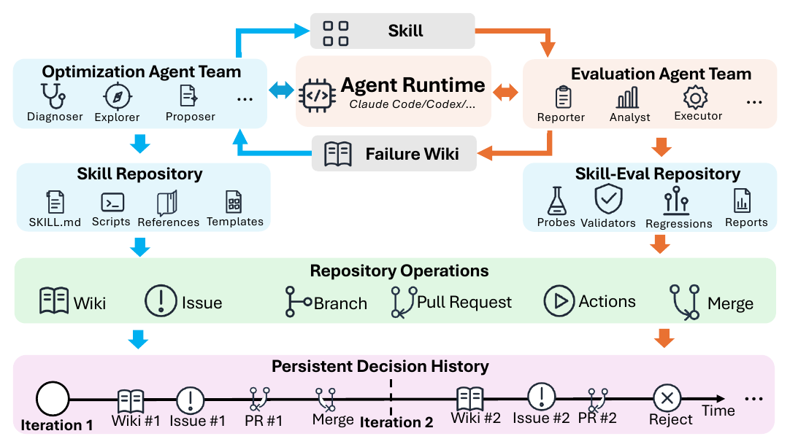

01研究背景与问题定义
技能文件的最新版本只能告诉后来的智能体“现在怎样做”，很少解释为什么改成这样、哪些替代方案失败过。跨会话继续优化时，新实例容易重复诊断、撤销曾有理由保留的规则，或再尝试已被拒绝的补丁。单纯保存版本差异不足以恢复这些决策背景；把完整评测轨迹交给修改者，又可能让技能朝探针答案过拟合。
SkillHone 因而把技能进化本身的决策历史作为持久状态，同时隔离可编辑技能和含答案的评测资产。固定模型与工具后，开发过程持续记录诊断、候选修改、删减后的评测证据和接受结果，让未来代理继承的不只是文件，还有“为什么这个改法被保留或拒绝”。
| 缺失 | 只保留现有技能的后果 | SkillHone 新增状态或边界 |
|---|---|---|
| 决策上下文丢失 | 同样失败被反复解释，拒绝过的补丁重新出现。 | 保留诊断—修订—证据—结果的关联历史。 |
| 修改者直接接触评测真值 | 可能学习目标答案和验证器细节，而非通用过程。 | 评测侧只输出脱敏问题报告，修改侧不能读取原始探针资产。 |
该方法优化的是技能开发过程，部署执行器不需要扮演所有开发角色。它还区分“调度器分配工作”和“基于证据接受修改”：消息路由本身并非新的全知裁判。
02方法与技术路线
系统维护两个仓库和一个共享决策历史。优化侧可写技能仓库；评测侧可读探针目标与轨迹、执行测试，却不能改技能。共享的是经过边界处理的证据，不是完整内部数据。
技能仓库 · 优化侧可写
当前 SKILL.md、脚本、参考和模板；读取相关历史形成诊断与局部候选。
评测仓库 · 评测侧专用
练习探针、目标、验证器与轨迹；执行候选，导出脱敏问题报告。
候选审查与证据决策
accept / revise / reject / defer；只有接受才将补丁应用于当前技能。
权限分离：防止反馈直接变成答案存储
优化角色可以检查技能文件和先前决策，依据报告诊断问题、提出有范围的修订。评测角色持有探针、验证套件、回归集与原始轨迹，运行并分析当前技能，再输出删除敏感目标与轨迹内容的报告。它没有技能仓库写权限，修改者也没有未脱敏评测资产的读权限。
这使报告尽量表达“哪里出了问题、什么行为需要修复”，而不直接供应要背下来的答案。边界由运行时与仓库权限实现，不应把它说成提示词里一句“请勿泄露”。但脱敏报告仍会反复暴露同一练习分布的错误类型，不能因此宣布彻底消除了验证过拟合。
持久历史：差异文件与决策记录解决不同问题
记录把某个诊断、拟议修改、评测证据和最终结果连在一起。版本差异可以恢复修改前后，却无法单独解释补丁为什么被撤回；决策历史则能提醒新实例不要把同一错误重新包装一遍。它也允许在新证据下重新审视旧拒绝，而不是将拒绝永久当作禁令。
新报告到达后，优化子代理按相关性读取历史，决定问题是新出现、旧问题复发，还是过去改法的边界。结果有接受、继续修改、拒绝和延期四类，只有接受改变当前技能，其余结果仍增加开发记忆。论文没有给出一个适用于所有任务的固定数值接受阈值，因此不能把角色决策画成统一的自动分数闸门。
调度角色与执行角色为何要分开
运行时动态派发新的权限受限实例，而不是假设固定一组具名代理长期记住所有事情。调度器负责证据路由、请求审查和写入记录；判断仍由在相应权限内持有证据的一侧作出。新上下文降低了会话残留依赖，持久记录则补回需要跨会话延续的判断依据。
最终产物依然是可携带的技能包。开发时使用的强控制模型与执行评测模型分开：Claude Opus 4.6 负责开发控制，Qwen3.6-35B-A3B 执行技能与生成最终基准结果。由此，收益应理解为外部开发过程提高了固定执行器的程序，而不是小模型凭自身独立完成了全部优化。
论文原始结构图 · 点击对照

03实验设计与结果分析
同一公共技能起点，改进是否来自开发组织方式
Raw open-web，不使用预集成商业搜索工具；共有相同社区技能池，固定执行骨干。
| 开发方式 | GAIA 平均 | WebWalkerQA-EN 平均 |
|---|---|---|
| Existing-Skills 直接使用 | 41.7 | 50.2 |
| Skill-Creator | 44.1 | 38.1 |
| Hermes-SE | 50.4 | 53.0 |
| SkillHone | 64.6 | 66.4 |
直接提供技能并不足以得到完整检索、核验和恢复程序；Skill-Creator 在 WebWalkerQA 还低于直接使用，说明自动修改也可能破坏既有能力。SkillHone 的一致提升支持结构化开发回路的价值。
但完整系统同时含角色隔离、报告处理和历史保留，主表无法把提升单独归因于“保存拒绝历史”。要验证这一机制，需要在同角色和同开发预算下只去掉决策历史。
不同检索基础设施之间，分数不能当作纯组件消融
使用商业检索的 deep-research 参考系统在两个基准分别为 48.8 和 63.2。SkillHone 的较高分数说明可携带技能可以组织出有竞争力的开放网页流程，但基础设施、实现与控制条件不同，不能推出公共搜索本身优于商业搜索。
论文提供开发轨迹对照来展示局部撤回和失败证据保留的行为差异，但未形成独立、统一的开发 token—执行成本—时延账本。需要把开发调用与最终任务调用区分，不能由部署技能文件较轻便推断开发过程低成本。
04贡献、局限与综合评价
核心贡献：让技能开发具备可继承的理由
SkillHone 将进化过程的知识从版本文件中分离出来，把失败修订和拒绝理由也当作未来工作的资源。权限边界与持久记录相互补充：前者约束可以学到什么，后者避免丢失为什么这样学。两类机制共同回应了跨会话持续开发的实际问题。
历史可能避免重复，也可能固化旧诊断
决策历史比原始日志更可用，却经过开发代理的归因。如果最初把外部网页不可用误诊成解析规则有误，后续代理可能因同一记录持续排斥正确修复。保存“拒绝”不保证拒绝理由可靠，权限隔离也不保证脱敏报告保留了足以重新诊断的证据。
可用具有可控根因的环境漂移测试来区分记忆价值和记忆负担：让失败表象相同而原因变化，检查保留历史的系统能否修订旧结论。若只是更少重复补丁却更难适应新根因，说明还需要记录置信度、适用条件及反证，而非无限增加决策条目。
综合看，现有结果证明了一个完整开发 harness 能改善固定执行器的深度检索技能；持久决策历史是有解释力的设计，而不是已经被主表单独证明的唯一原因。其最可迁移的思想，是把技能进化看作需要证据隔离和理由继承的软件维护。